COORD05 資料レビュー・陰影検証計画・選択肢
2026-10-02 / Claude Code Cloud（隔離リポジトリ）/ 入力 COORD04_CloudReview_input.zip 38/38 照合 PASS / 新規描画・Unity 実行なし。画像は同梱PNGのバイト同一コピー（images/）と、明示ラベル付き解析切抜き（crops/）のみ。公開リポジトリ版では、アニメ参照画像8枚と参照の切抜き1枚を除外し、ファイル名だけを表示しています。
判断（要約）
- 次は 0 = 仮説検証（T1 EXR読取 → T2 プローブ読取 → T3 太陽On/Off）だけを承認。
- 0 の結果で A（卓上限定ライト、PC重視）か B（描き込み接触影、Quest/Mobile重視）を1つ試験。
- C（Static＋Bake/AO）は非推奨（未承認・全体変化）。承認がない間は現状維持。
- 陰影ゼロ・ベイク必須・A/B の効果は主張しない（未検証）。
詳細: decision_brief.txt / review_detailed.txt / verification_plan.txt / options_comparison.csv
区分
- 観察: 画像を見たこと。画素: 8bit sRGB 表示値の統計（線形値ではない）。記録: 同梱報告の記載。仮説: 未確認。提案: 未実施。
- 記録: 実時間に効き得る光は Mixed の Review_Sun のみ、室内12灯 Baked、料理は非Static・プローブ照明、焼き込みAOなし、Shadowmask。
- 仮説: H1 卓上で太陽が遮られる / H2 プローブ光の方向性が弱い / H3 Renderer の影設定 / H4 クロス表示飽和（部分的）/ H6 皿形状（別系統）。同一原因扱いしない。
カプレーゼ（VIS01/VIS04）
観察: 料理→皿・皿→クロスの落ち影が見えない。皿斜面の表示値は200〜201でほぼ一定。POSE01で上トーストの三角面が読める（差分はトースト周辺のみ）。参照は2段皿で縁・くぼみ・パン下に柔らかい陰。
Tomato_and_Mozzarella_Anime.png（元 archive の Reference/ を参照。ローカル ZIP 版には同梱）

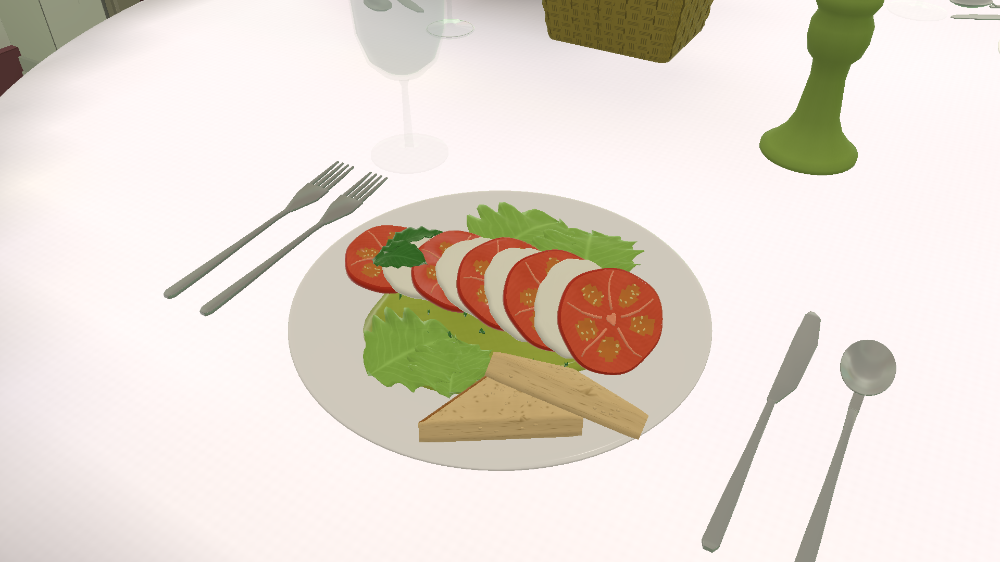

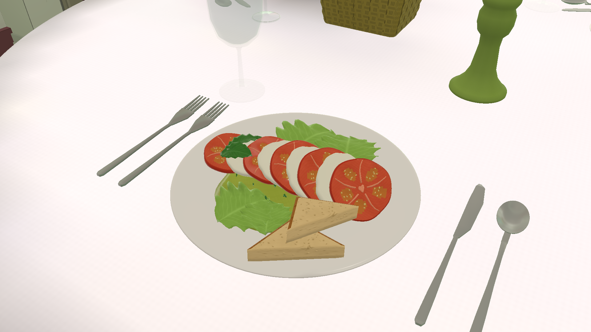
解析用切抜き: カプレーゼの皿（新規描画ではない）
crop_Tomato_and_Mozzarella_Anime_plate.png（元 archive の Reference/ を参照。ローカル ZIP 版には同梱）

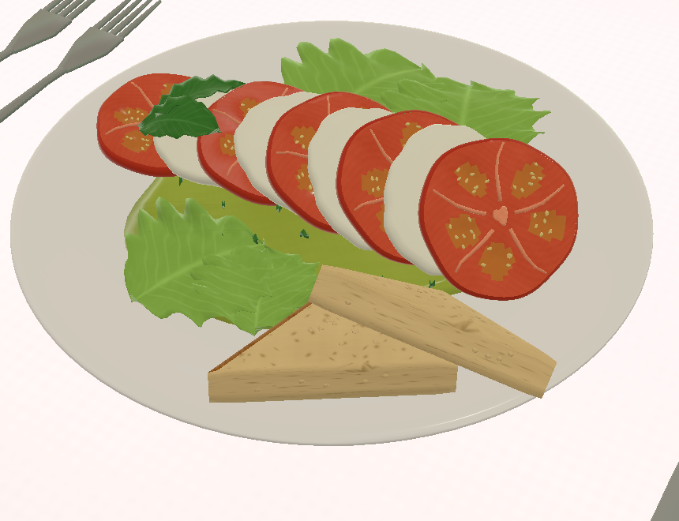

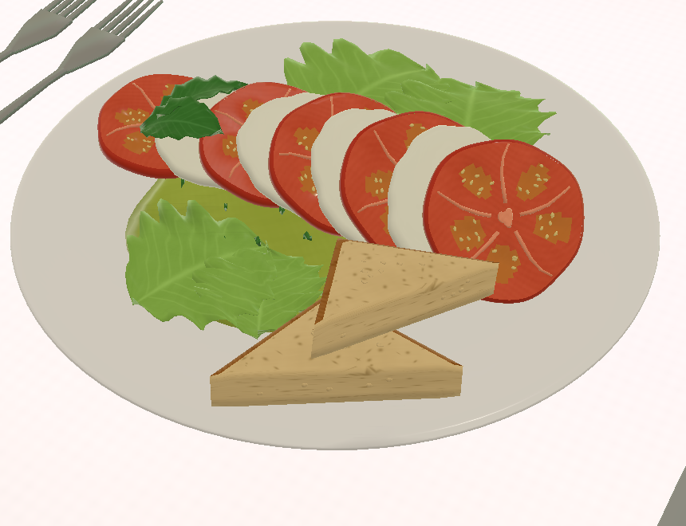
ラムチョップ（VIS05）
観察: 参照は肉・ソースの艶と強い明暗。RI02は肉の面の明暗が弱く、ソースの艶が読めない。落ち影なし。材質差（VIS05）と共通の接触影不足（VIS04）は別問題。
Lamb_Chops_with_Applesauce.png（元 archive の Reference/ を参照。ローカル ZIP 版には同梱）

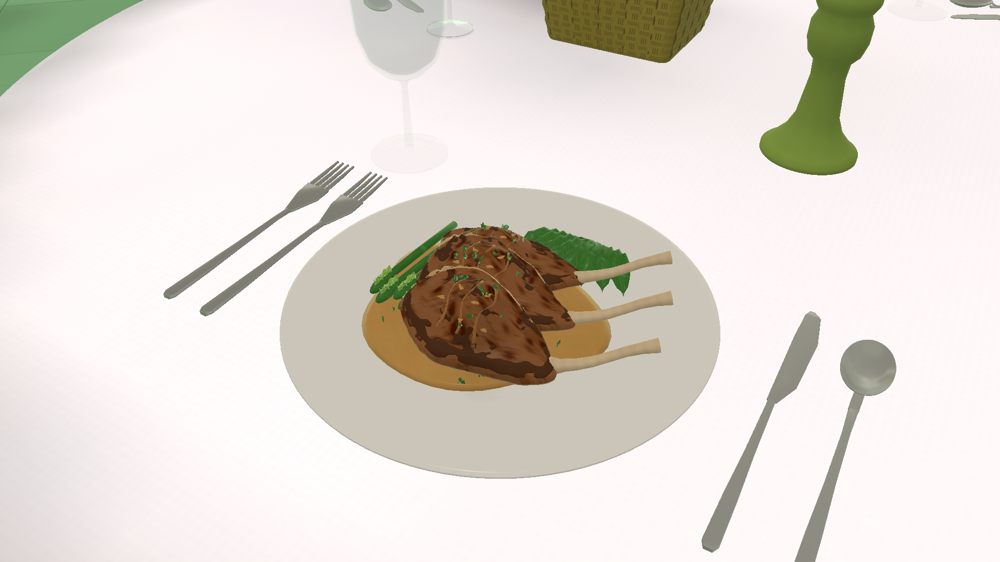
プッタネスカ（VIS05/VIS06）
観察: 参照は深皿のくぼみが陰で読める。RI02は皿が平面的、外側の麺が浮いて見える箇所（形状不良とは断定しない）。
Spaghetti_alla_Puttanesca.png（元 archive の Reference/ を参照。ローカル ZIP 版には同梱）

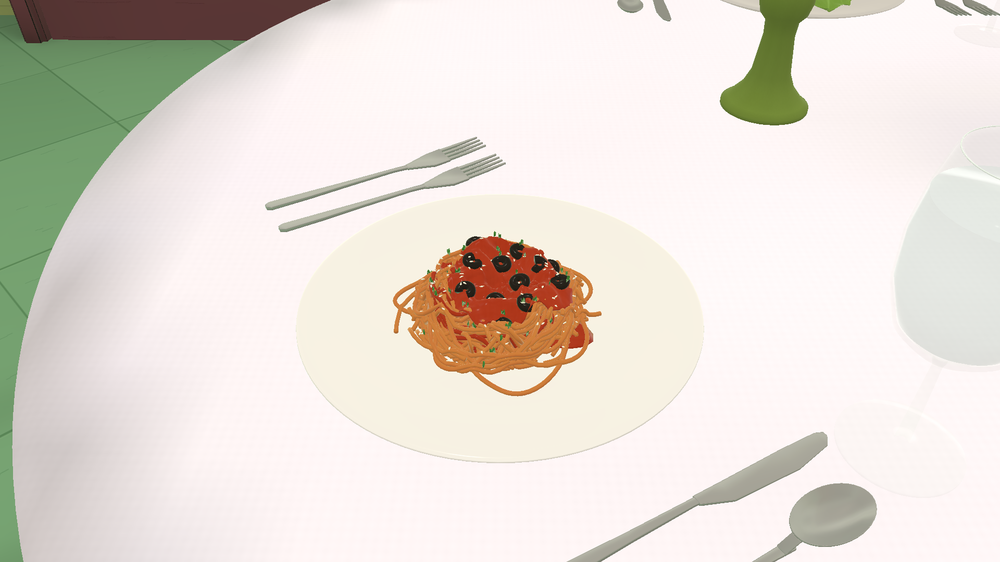
プリン（VIS05、2枚皿は維持）
観察: 2枚皿は保持。プリン側面の明暗・カラメルの艶・皿下の落ち影が参照より弱い。飽和画素7.5%の画角でも接触暗部なし。
Pudding_Anime.png（元 archive の Reference/ を参照。ローカル ZIP 版には同梱）

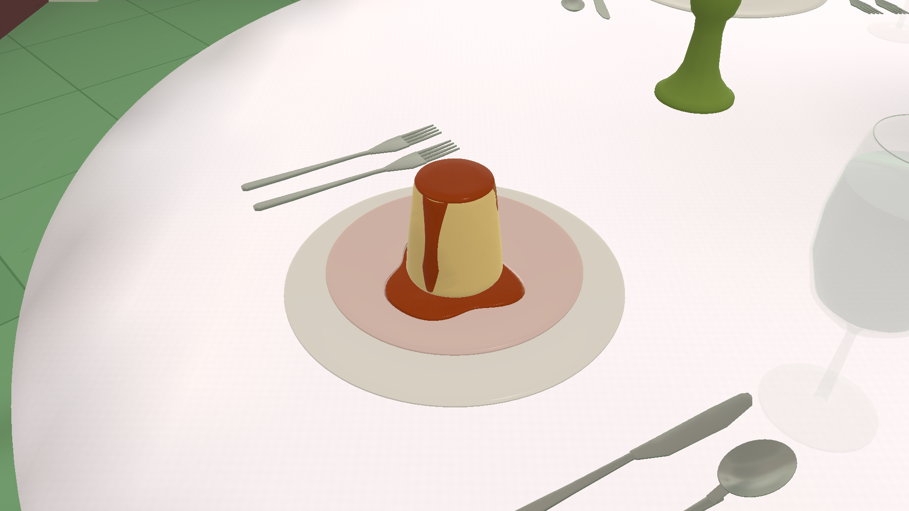
MENU 文字（VIS02）
観察: 和文2行が細くなり英字・価格との釣り合いが改善。手書き字形とは異なる（既知の残件）。
DU_ep10-3.png（元 archive の Reference/ を参照。ローカル ZIP 版には同梱）

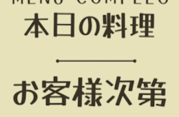

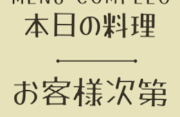
入口看板 文字（VIS03）
観察: 「トラサルディー」が太くなり英字との釣り合いが改善。字間は参照より広い。


外観・屋外の実時間影（陽性対照の候補）
観察: 屋外ではメニュー台→壁、街灯→地面などの実時間影が出ている。影の仕組み自体は屋外で動作。
AnimeDU_TrattoriaFrontExt.png（元 archive の Reference/ を参照。ローカル ZIP 版には同梱）


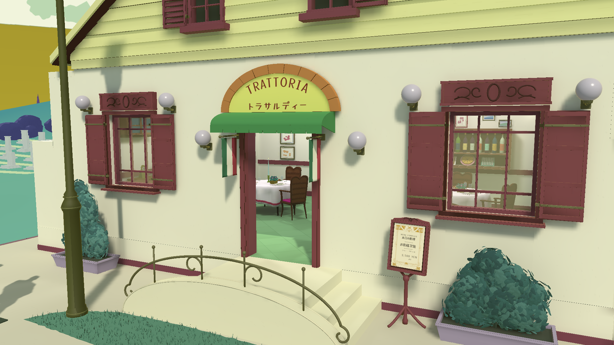

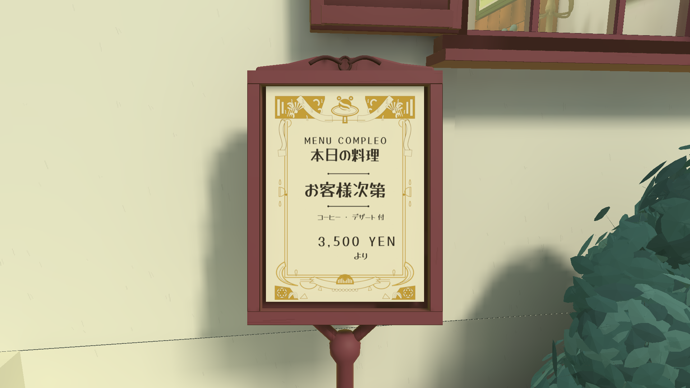


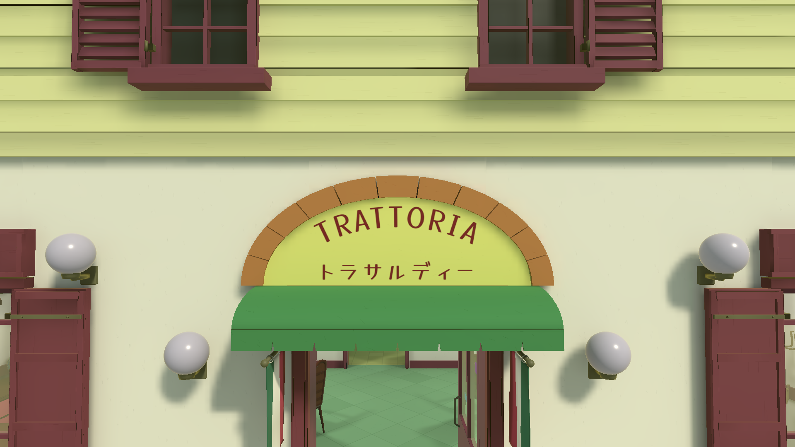

室内参照
観察: 卓・椅子の下に濃い落ち影、クロスの襞の陰。
DU_ep10-4.png（元 archive の Reference/ を参照。ローカル ZIP 版には同梱）
画素統計（POSE01_FoodCaprese.png、解析のみ）
| 画像 | 領域 | 矩形 | min | max | mean | sd |
|---|---|---|---|---|---|---|
| POSE01_FoodCaprese.png | plate_outer_slope_left | [585, 620, 640, 700] | 200 | 201 | 200.37 | 0.48 |
| POSE01_FoodCaprese.png | plate_lower_right_incl_rim | [1250, 700, 1330, 780] | 173 | 250 | 203.26 | 11.74 |
| POSE01_FoodCaprese.png | cloth_just_below_plate | [900, 920, 1020, 980] | 246 | 250 | 247.99 | 0.43 |
| POSE01_FoodCaprese.png | cloth_far_left | [300, 900, 420, 980] | 240 | 248 | 245.26 | 1.17 |
| 画像 | 何れかのチャンネル=255 | 全チャンネル≥245 |
|---|---|---|
| POSE01_FoodCaprese.png | 49.54% | 45.3% |
| RI02Baseline_FoodCaprese.png | 49.54% | 45.3% |
| IntegratedRI02_FoodLamb.png | 44.4% | 49.38% |
| IntegratedRI02_FoodPudding.png | 7.49% | 13.17% |
| IntegratedRI02_FoodPuttanesca.png | 41.53% | 45.95% |
RI02Baseline_FoodCaprese.png の同領域は同値（差分はトースト周辺 (930,639)-(1245,905) のみ）。
選択肢 0/A/B/C/現状維持
| option | summary | expected_visual_effect_unverified | shape_material_impact | follows_lighting_changes | edit_maintenance_cost | performance_and_Quest | required_approvals | reject_conditions | selection_conditions | recommended_order |
|---|---|---|---|---|---|---|---|---|---|---|
| 0 | 仮説検証のみ（T1 EXR読取→T2 プローブ読取→T3 太陽On/Off→条件付きT4） | 見た目は変えない。原因の切り分け材料を得る | なし（診断コピーで切替・読取のみ） | 該当なし | 低。既存の撮影/保全手順を流用 | 影響なし | ローカル読取許可、診断Unityバッチ/撮影の承認（Play/Bakeなし） | 陰性対照が一致しない、陽性対照が変化しない、保全不一致 | A/B/Cのどれを試すか決める前に必ず行う | 1 |
| A | 卓上限定の実時間ソフト影ライト1灯（料理/皿/クロス層に限定） | 接触影と皿・パンの明暗が出る可能性。未検証で保証しない | 形状不変・材質値不変。ライト1個の追加 | 追従する（その追加ライトに対して） | 中。光の向き/強さ/層の管理、他の卓との整合 | PC負荷増。記録上VRC Mobileは影なしのためMobile/Questでは影が出ない見込み。Quest実機は未確認 | 診断候補作成の承認、採用時はRI04以降の統合承認 | T5で変化が小さい、新たな白飛び、他物体への影の漏れ、Questで差が大きすぎ問題化 | T3でH1が支持され、主対象がPC表示で、T5の同条件画像で目視採用された場合 | 2（PC重視の場合） |
| B | 描き込み接触影（半透明の影板）を皿下・パン下に追加 | 参照のアニメ的な接触陰に近づく可能性。皿の形の陰影は変わらない | 料理メッシュ・材質は不変。新規の追加物（形状変更と区別して記録） | 追従しない（固定） | 中。料理ごとに板の作成・配置、描画順の管理 | 低負荷の見込み。影設定に依存しないのでMobile/Questでも表示されうる（未確認） | 候補アセット作成の承認、採用時の統合承認 | 透明グラスとの描画順不具合、ちらつき、貼り付け感、照明変更時の違和感 | Quest/Mobileでの見え方を重視する場合、またはT5の効果が不十分な場合 | 2（Quest重視の場合） |
| C | 料理Static化＋再ベイク/AO | 卓面側の接触陰が出る可能性。料理自体の形の陰影は限定的 | 料理配置の固定化。ライトマップがシーン全体で変化 | 追従しない（焼き込み） | 高。全体再ベイク、Static化による運用制約、比較が一要因にならない | 実行時負荷は低めだがライトマップ容量増。Quest未確認 | Bake/AOの明示承認（現在未承認） | 全体の見た目が変わる、料理を動かせない、ベイク時間/容量 | A/Bで不十分で、Bake承認が別途得られ、全体再確認の時間が確保された場合のみ | 4（現時点で非推奨） |
| keep-current | RI03保存状態を維持し陰影は変えない | 変化なし。接触影・皿の平坦さは残る | なし | 現状どおり（屋外は実時間影あり） | なし | 変化なし | なし | （既定値。却下条件なし） | 承認がない場合や、0の結果で改善の手段が見当たらない場合の既定 | 3（承認待ちの既定） |
限界
- RI03 保存シーン 14 PNG は 0/14 未撮影。
- FOLLOWUP05 独立PASSは50項目・420ファイルの部分集合。原本7,779件は未再ハッシュ。
- 線形EXR・SH・プローブ遮蔽値・Renderer影設定は同梱資料になし。
- 参照は手描きで別カメラ・別照明。色差をシェーダー原因としない。